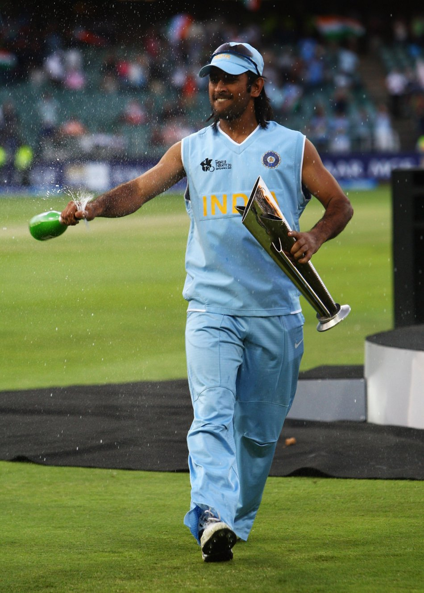
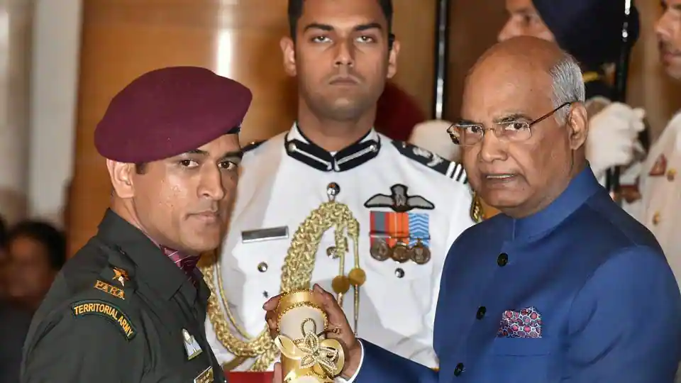

Mahendra Singh Dhoni, born on July 7, 1981, is a cricketing legend hailing from Ranchi, Bihar (now in Jharkhand), India. He is widely regarded as one of the greatest cricket captains, wicket-keeper-batsmen, and finishers in the history of the sport.
Dhoni's journey from being a Travelling Ticket Examiner at Kharagpur railway station to the captain of the Indian national cricket team is a story of determination and dedication. He made his ODI debut in 2004 and quickly rose to prominence, becoming the captain of the Indian cricket team in 2007.
Under Dhoni's leadership, India achieved numerous milestones, including winning the ICC T20 World Cup in 2007, the ICC Cricket World Cup in 2011, and the ICC Champions Trophy in 2013. He is the only captain to have won all three major ICC tournaments.
Dhoni is known for his exceptional captaincy skills, calm demeanor on the field, and the ability to finish matches under pressure. He is also the captain of the Chennai Super Kings in the Indian Premier League (IPL), with numerous IPL victories to his name.
Beyond cricket, Dhoni received India's highest sports honor, the Major Dhyanchand Khel Ratna Award in 2008, and several civilian awards, including the Padma Shri and Padma Bhushan. He is also an honorary Lieutenant Colonel in the Parachute Regiment of the Indian Territorial Army.
MS Dhoni's impact on the world of cricket is immeasurable, and his legacy continues to inspire cricketers and fans alike. He announced his retirement from international cricket in 2020 but continues to enthrall fans with his performances in the IPL.